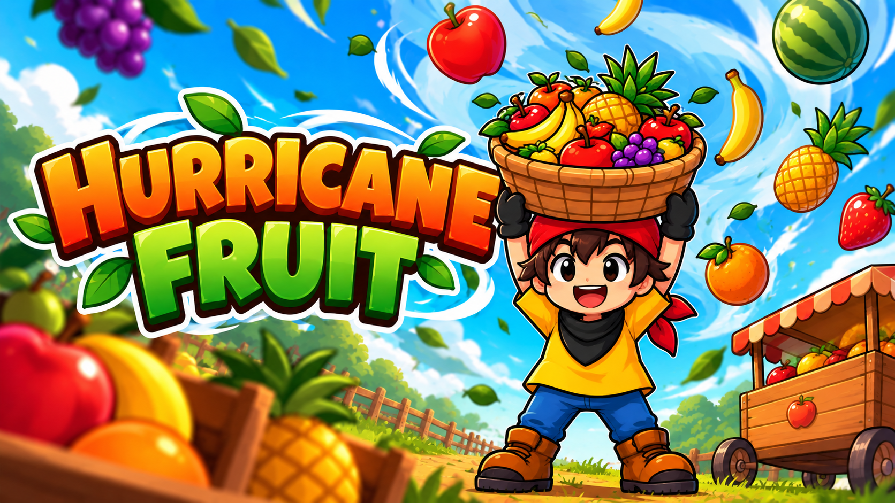

Hurricane Fruit
2D Mobile Game | Personal Project | Unity
In DevelopmentSystems Designer
Unity Developer
🎮 Overview
Hurricane Fruit is a 2D mobile game built around a simple collection and delivery gameplay loop.
The player moves horizontally to catch falling fruits, manages the limited capacity of their basket, and delivers the collected fruits to score points.
The project is being developed as an exploration of how simple mobile mechanics can evolve into meaningful player decisions through resource management, progression, balancing, and risk-reward systems.
🔄 Core Gameplay Loop
The gameplay is structured around a short and accessible loop designed for mobile play sessions.
🛠️ Current Features
- Touch-based horizontal movement designed for mobile devices.
- Falling fruit spawning and collection system.
- Basket capacity system with a maximum carrying limit.
- Visual feedback that changes as the basket fills.
- Fruit delivery mechanic with a short delivery delay.
- Mobile UI displaying basket capacity and player score.
- Delivery cart that can change position during gameplay.
⚙️ Systems Design
One of the main design goals for Hurricane Fruit is to expand the simple fruit-catching mechanic into a system where different fruits create different decisions for the player.
The fruit system is being designed around four main variables:
💰 Value
Different fruits can reward different amounts of points.
⬇️ Fall Speed
Some fruits can be easier or harder to catch depending on how quickly they fall.
🧺 Basket Space
Larger or more valuable fruits can require more basket capacity.
🎲 Drop Chance
Fruit rarity can influence how often each fruit appears during gameplay.
🧠 Design Goal
The goal is to introduce meaningful decisions without making the core gameplay unnecessarily complex.
For example, a valuable fruit may reward more points but also occupy more basket space. This creates a trade-off between collecting immediate rewards and preserving capacity for future opportunities.
By combining fruit value, rarity, fall speed, and basket capacity, the system can create simple risk-reward decisions while maintaining an accessible mobile gameplay experience.
💻 Development Process
Hurricane Fruit is being developed in Unity. I am responsible for both the game design and implementation of the prototype.
This allows me to quickly prototype mechanics, test how they interact during gameplay, evaluate the player experience, and iterate on the design based on playtesting.
The project also gives me an opportunity to combine my Game Design, programming, and QA background in a single development process.
🎥 Gameplay
Gameplay footage and additional development updates will be added as the project continues to evolve.
🚧 Next Steps
- Expand the game with additional fruit types.
- Implement individual fruit values and scoring.
- Introduce different fall speeds.
- Implement different basket space requirements.
- Create a weighted drop chance system for fruit rarity.
- Continue balancing the core gameplay loop through playtesting.
- Improve visual and audio feedback.